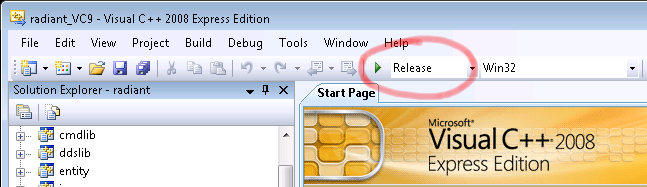

This guide explains how to compile GtkRadiant 1.6.x from source code on Windows operating systems. The source code is obtained from the GtkRadiant SVN repository, which is open to the public (details follow). These instructions are aimed at developers wanting to test changes to GtkRadiant source code. The instructions below have been executed successfully on Windows XP 32 bit (some late service pack) and on Windows 7 Ultimate 32 bit. Since 64 bit systems have not been tested by me, I cannot give any advice on how to complete these instructions on those systems. (Also, I'm an advanced UNIX user but a complete Windows nub.)
This guide is divided into the following main sections. I choose to use MSYS instead of Cygwin in this tutorial because using MinGW/MSYS is the documented and supported way to compile ioquake3. The need for MinGW/MSYS is really only to execute a single SCons build target; you could presumably execute those needed steps by hand if you really don't want to bother with installing MSYS (but you're on your own if you choose that route).
The following URL can be used as a coarse guide for installing MinGW: http://www.mingw.org/wiki/Getting_Started. The needed steps are reproduced below.
Download the mingw-get program. We're going to use mingw-get as opposed to the graphical installer mingw-get-inst . You can download the most recent version of mingw-get from this SourceForge page. (That page also contains a readme.txt file that has very useful information on how to use mingw-get , for your reading pleasure.) Download the binary zip file version; the downloaded file should have a name along the lines of mingw-get-0.1-mingw32-alpha-5-bin.zip .
Extract the zip file you just downloaded to C:\MinGW . I would use that exact location; I will be referring to that location in the rest of the instructions. If you choose a different location, make sure that there is no space in the path. After extraction, double check that there exists a file C:\MinGW\bin\mingw-get.exe . If such a file does not exist, you extracted at an incorrect level or you downloaded the wrong zip archive.
You need to add C:\MinGW\bin to your PATH system environment variable. Don't forget that the semicolon character is the separator for the elements in PATH . The steps to find where PATH can be edited are roughly as follows on Windows XP:
We're going to update the mingw-get program with the latest version and pull in the latest distribution manifest. Open up Command Prompt. Execute the following commands:
C:\MinGW> mingw-get update C:\MinGW> mingw-get upgrade mingw-get
The above commands can be executed from any directory; C:\MinGW happened to be the currect directory in my case.
Note: If you execute mingw-get without any arguments, you might get an unpleasant-looking error. This is normal.
We're all done installing the base of the MinGW system. You don't need to install any additional mingw-* packages to get GtkRadiant to compile (because we're using different software to actually compile GtkRadiant).
We're now going to install MSYS, which sits on top of MinGW.
Open up Command Prompt. Execute the following command:
C:\MinGW> mingw-get install msys-base
You can now close the Command Prompt. You won't have to use it again!
In your native file exploring application in Windows, navigate to C:\MinGW\msys\1.0 . Here you will find a file msys.bat . This script is what launches MSYS. You can make a shortcut to this file and place the shortcut in a convenient location such as your Desktop. You can also use the provided icon msys.ico (in the same directory) for your shortcut icon.
Now start MSYS by double-clicking msys.bat (or your shortcut). We will use MSYS to install some remaining packages that are needed. In case you are completely new to MSYS, I'd like to point out that it's much like a UNIX shell. In fact you can access the C: Windows drive in MSYS via the /c path.
There are many MinGW/MSYS packages you can install; you may even choose to install all of them. However, for the purposes of compiling GtkRadiant, you will need only the following. Execute this from your MSYS shell:
$ mingw-get install msys-wget $ mingw-get install msys-unzip
You should now have the two commands wget and unzip at your disposal in the MSYS shell. We will be needing these commands to successfully execute the SCons build target later on.
You can leave your MSYS shell open because we will use it again in a little while.
Side Note: The msys-openssh package comes with traditional scp and ssh commands that work orders of magnitude faster than WinSCP or PuTTY.
We will now install the Python programming language, which is needed for SCons to work.
The homepage for Python is www.python.org. You should download and install a version of Python suitable for your version of Windows. I would strongly recommend sticking to a version of Python that is 2.x.x, not 3.x.x. This is because lots of legacy software that uses Python is known to work correctly with 2.x.x, but might not necessarily work with 3.x.x. At the time of writing this tutorial, the preferred version of Python was 2.7.1. For purposes of this tutorial, Python is installed to C:\Python27 . All of the default options for installing Python should be fine.
The following step is needed since we're going to be calling SCons in such a way that requires the python command to be in our PATH in MSYS. In your MSYS shell, execute this:
$ mkdir -p /usr/local/bin $ ln -s /c/Python27/python.exe /usr/local/bin/python
You should now have the python command at your disposal in your MSYS shell.
We will now install SCons, which is a multi-platform substitute for traditional Make.
The homepage for SCons is www.scons.org. You should download and install the latest production release. During the install procedure you will be asked to confirm the location of your Python installation.
SCons gets installed into C:\Python27\Scripts because it's basically a Python script. You would normally invoke SCons by using the scons.bat script in this directory. However, since we will be invoking SCons from MSYS (which is UNIX-like), we're actually going to call the UNIX script version of SCons, which is the plain-old file scons in this same directory. Furthermore, we're going to make sure that the scons command is available under MSYS. Execute these commands in your MSYS shell:
$ mkdir -p /usr/local/bin $ ln -s /c/Python27/Scripts/scons /usr/local/bin/scons
You now have the scons command at your disposal in the MSYS shell.
We're now going to install a command-line version of the SVN client that we can use from MSYS. We don't need no stinkin' GUI. Anyhow, command-line SVN is required to perform the SCons build target later on. In fact, you don't need to touch TortoiseSVN or any other GUI-based SVN client for any part of this entire tutorial. (I wouldn't touch a GUI-based SVN client with a 10 foot pole given the opportunity to use command-line SVN instead.)
The preferred download site for SVN client for Windows is CollabNet. You should download and install CollabNet Subversion Command-Line Client, not CollabNet Subversion Edge or something of any other nature. Unfortunately you'll have to create an account with CollabNet to download this software, but everything is free. You can use all defaults when installing SVN.
The CollabNet version of SVN client for Windows should automatically modify your PATH , and you should be able to execute the svn command in MSYS after closing MSYS and starting it again. If this is not the case for some strange reason, you'll have to tweak your environment to ensure that you can execute the svn command from MSYS.
The GtkRadiant developers are currently using Microsoft Visual C++ 2008 to compile GtkRadiant. Even though Visual C++ 2010 is a newer version, don't use it [unless you want to be on your own]. You can download Visual C++ 2008 Express Edition from this Microsoft webpage.
When you install Visual C++ 2008 Express Edition, you can install the bare minimum application without any extras such as Microsoft Silverlight Runtime or Microsoft SQL Server 2008 Express Edition. For the rest of the install options, the defaults can be chosen.
We are now ready to get the source code for GtkRadiant.
Open an MSYS shell. When you start the shell, you will be in what is called your "home directory". You can execute the pwd command in MSYS to find out which directory you are currently in. For example, when I start MSYS, my current directory is /home/rambetter . In reality, this path is relative to the MSYS install root. For example, in the Windows operating system, my home directory is actually C:\MinGw\msys\1.0\home\rambetter .
In any case, we need to create ourselves a work area for purposes of downloading files and compiling software. I would recommend creating a directory radiant-work in your home directory. So:
$ mkdir radiant-work
Now, we're going to change to that directory and get the base GtkRadiant project:
$ cd radiant-work $ svn checkout svn://svn.icculus.org/gtkradiant/GtkRadiant/trunk ./GtkRadiant
We created the extra radiant-work parent directory of GtkRadiant because the following step will place many files into the project's parent directory, and we don't want to litter our home directory with these files.
Remember all the work we did earlier in order to install SCons? Well, thanks to all that work we did, obtaining the remaining things we need for compiling is really really easy:
$ cd GtkRadiant $ scons target=setup
This SCons build target performs several actions:
We are now finally going to compile GtkRadiant using Microsoft Visual C++.
Start Microsoft Visual C++. From the "File" menu, choose "Open" -> "Project/Solution...". Navigate to your GtkRadiant directory (in my case C:\MinGW\msys\1.0\home\rambetter\radiant-work\GtkRadiant). Choose the project file radiant.sln from this directory.
You now have the GtkRadiant project loaded in Visual C++. You can poke around if you like, e.g. open up some source code files and edit them.
Before you build the project, you might want to select the "Release" target (as pictured below).
|  |
To build GtkRadiant, choose "Build Solution" from the "Build" menu. The build will take about 10 minutes [on a Pentium 4 with HTT], so this would be a good time to go get a cup of tea.
If the build completes successfully, you will get a message similar to the following in the output of Visual C++:
radiant - 0 error(s), 0 warning(s) ========== Build: 38 succeeded, 0 failed, 0 up-to-date, 0 skipped ==========
All of the files needed to run GtkRadiant are going to be in the folder radiant-work\GtkRadiant\install [relative to your home directory in MSYS]. You can copy the entire install folder to some place such as your Desktop and you can rename this folder to ZeroRadiant for example. Then, you will use radiant.exe in that directory to launch the application.
There is one little bit of optional cleanup you can perform on your installation folder. You can remove all SVN-related files since they are no longer needed and only take up disk space. Let's say that you renamed your installation folder to ZeroRadiant (as the previous paragraph suggests), and let's say that you're in the MSYS shell, and that your current working directory is the parent directory of ZeroRadiant. Then, in your MSYS shell, you can execute this command to delete all SVN-related files (all .svn directories):
$ find ZeroRadiant/ -type d -name '\.svn' -print0 | xargs -0 rm -rf
That's it! Good luck and thanks for reading my tutorial! If you have comments or suggestions please email me at nlandys@gmail.com . More information about GtkRadiant is on www.qeradiant.com.